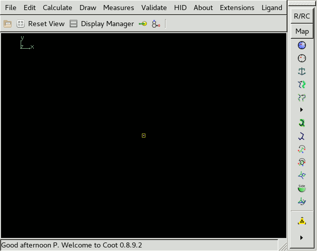

https://synergy.st-andrews.ac.uk/proteincrystallography
1st to 7th September 2019 (Programme)
University of York
Coot is a program for macromolecular model building, model completion and validation. In this workshop, we we learn how to use Coot by using it to complete a molecular replacement (MR) solution. The structure we are trying to build is 5EG2, a human SET7/9 mutant in complex with S-adenosyl-l-homocysteine (SAH) and a 10 residue transcription initiation factor (Fick et al. 2016). The data extend to 1.55 Å resolution and the A chain is small with only 262 residues.
As a homology model, we have chosen 1N6A. This is an older selenomethionine derivative of human SET7/9 solved at 1.7 Å resolution (Kwon et al. 2003). The model was processed using phaser.sculptor, which trims unaligned regions using a sequence alignment and truncates side chains that differ between the model and target. Pruning the MR model was not needed to find a solution in this case as it is so similar, but in general it is good practice. MR was done using phaser through the CCP4i2 Basic Molecular Replacement task. This was followed by csymmatch to move the MR solution to the same origin as the deposited structure and finally refinement using REFMAC. The following files from REFMAC are needed for the workshop:
>>> Type coot on the command line
The Coot window should appear. For this to work, the coot executable should be in your path. If it is not then you need to source one of the CCP4 setup scripts:
source ccp4-7.0/bin/ccp4.setup-csh # if shell is csh/tcsh
source ccp4-7.0/bin/ccp4.setup-sh # if shell is bashThe Coot window should look something like this:  At the top of the screen is the Menu Bar with File, Edit, Calculate etc. Below this is
Files that you want to open in Coot can also be passed as command line arguments:
coot refined_model.pdb refined_mode.mtz>>> Choose File/Open Coordinates...
A file browser will appear. From this you can select a coordinate file, as well choose how to recentre the view and the new molecule.
>>> Select refined_model.pdb and click Open
A window will appear asking you to Fix Nomenclature Errors. This is a common occurence when opening coordinates and is usually because there is a naming convention on symmetrical residues, e.g. which way round OD1 and OD2 are in ASP, that most programs ignore.
>>> Click Yes to fix nomenclature errors
Now we will open the 2mFo-DFc and mFo-DFc maps.
Going to File/Auto Open MTZ...
is equivalent to opening the MTZ on the command line
and will open maps if it recognises which columns to use.
Extra? Opening Coot via i2? Competition to see who gets the lowest R-free? Trying other online tutorials?
Paul Bond, University of York, paul.bond@york.ac.uk